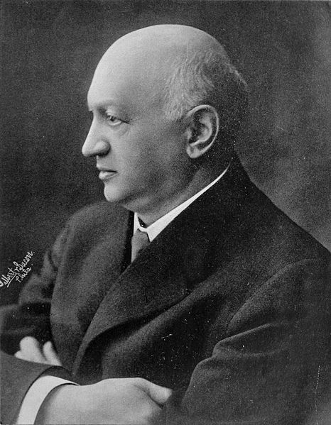

| 
How Brown Saw the Baseball Game adalah film komedi bisu pendek Amerika Serikat yang diproduksi pada tahun 1907 dan diedarkan oleh Lubin Manufacturing Company milik Siegmund Lubin (gambar). Film ini mengisahkan tentang seorang penggemar bisbol bernama Mr. Brown, yang meminum alkohol dalam jumlah banyak sebelum pertandingan bisbol dan menjadikannya sangat mabuk, membuat pertandingan yang dilihatnya muncul dalam gerakan terbalik. Selama masa produksi, trik fotografi digunakan untuk mendapatkan efek ini. Film ini dirilis pada bulan November 1907. Film ini mendapatkan ulasan positif dalam edisi tahun 1908 dari The Moving Picture World , sebuah jurnal film, yang melaporkan bahwa film ini sukses dan "benar-benar lucu." Hingga tahun 2015, tidak jelas apakah salinan film ini masih disimpan. Identitas dari pemain film dan kru produksi juga tidak diketahui. Para sejarawan film telah mengungkapkan beberapa kesamaan di antara plot How Brown Saw the Baseball Game dan film komedi yang diarahkan oleh Edwin S. Porter , How the Office Boy Saw the Ball Game yang dirilis pada tahun sebelumnya.(selengkapnya..)
Artikel pilihan sebelumnya: Kristallnacht – 95 dalil Luther – Vladimir Lenin |
|
6 orang tewas dan 81 luka-luka dalam sebuah pengeboman di jalan İstiklal (gambar), Istanbul, Turki. 2 orang tewas dan puluhan luka-luka dalam sebuah kerusuhan di Kabupaten Maluku Tenggara, Indonesia. Pada KTT ke-40 dan 41 di Phnom Penh, Kamboja, Timor Leste resmi diterima sebagai anggota ke-11 ASEAN. Soeharto Sastrosoeyoso, Paku Alam VIII, Rubini Natawisastra, Salahuddin bin Talabuddin dan Ahmad Sanusi diangkat menjadi Pahlawan Nasional Indonesia oleh Presiden Indonesia Joko Widodo. Sedang berlangsung KTT G-20 Indonesia 2022 Wabah cacar monyet Invasi Rusia ke Ukraina Kematian terkini Ari Hernanto Soemarno Mehran Karimi Nasseri Sven-Bertil Taube Zuiyen Rais |